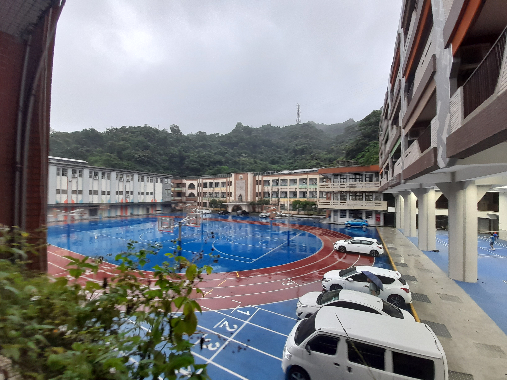
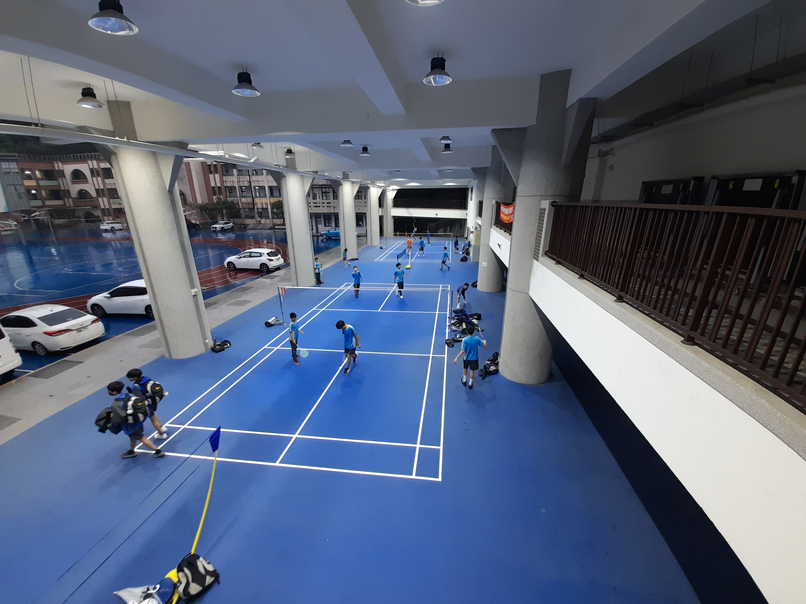
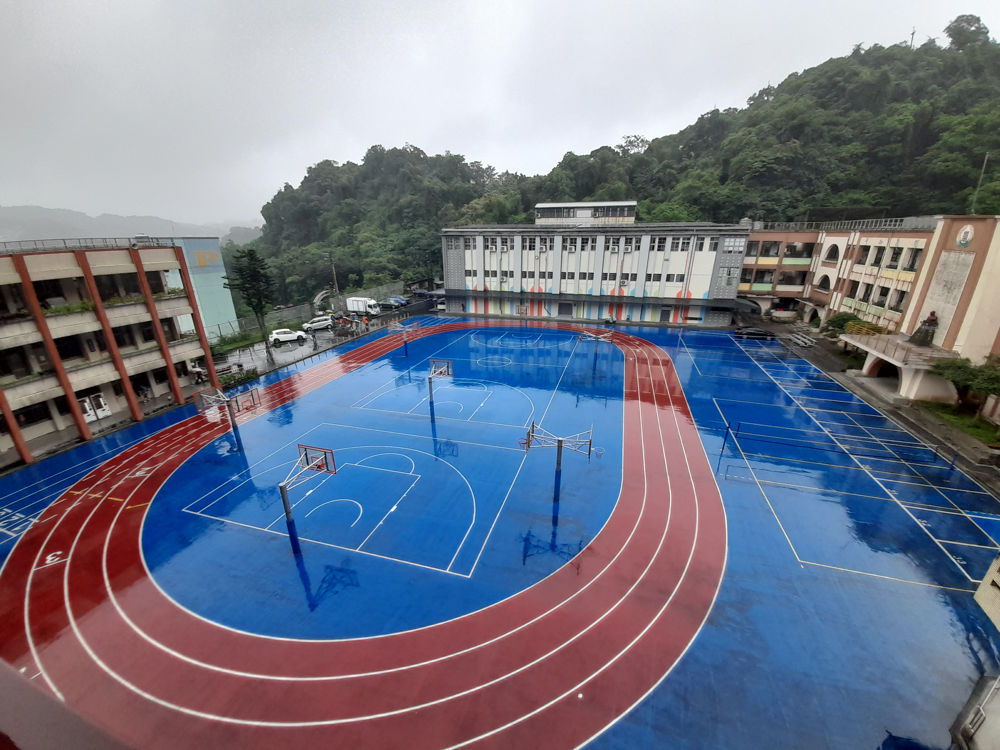
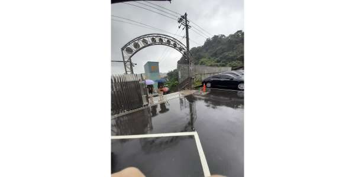
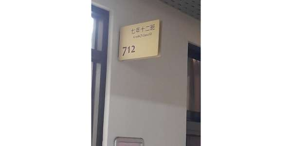

| 景點 | 照片 | 介紹 |
| 校長室大樓 |  |
校長室大樓是銘傳國中歷史最悠久的建築物，自從銘傳 國中剛成立時就在了，中途沒有經歷改裝、遷移，是一棟雖然已經快要100歲，但仍然在風雨屹立不搖的大樓 |
| 銘星廣場 |  |
位於尚智樓一樓，雨天的體育課時，所有上體育課的班 級都會聚集在這裡打羽毛球，十分熱鬧 |
| 操場 |  |
是銘傳國中學生下課時最喜歡休息的地方，在操場可以 進行籃球、排球、跑步等競賽 |
| 行人校門口 |  |
在銘傳國中的行人校門口常常可以看到因為爬了許多樓 梯而氣喘吁吁的同學們，和其他學校不同的地方是::我們 銘傳的行人校門口外面接的不是大馬路，而是讓人數不 清的樓梯，非常特別呢~~ |
| 712教室 |  |
是我們班平時學習的地方，下課時教室內總是充滿我們 的歡笑聲，下課時大家特別喜歡聚集在陽台看別人的籃球比賽 |